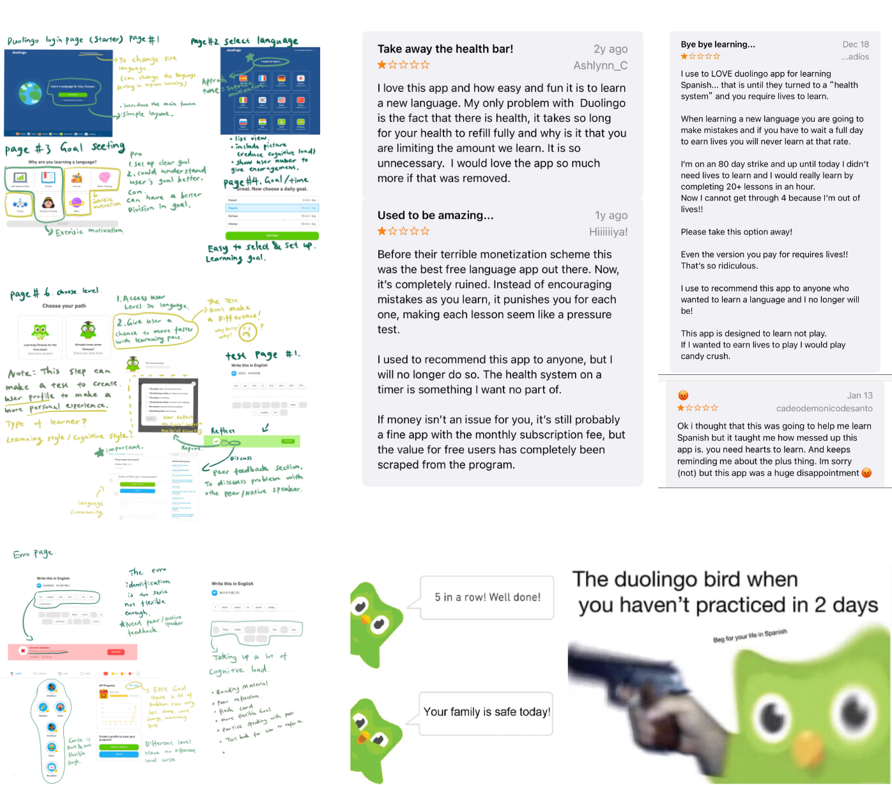
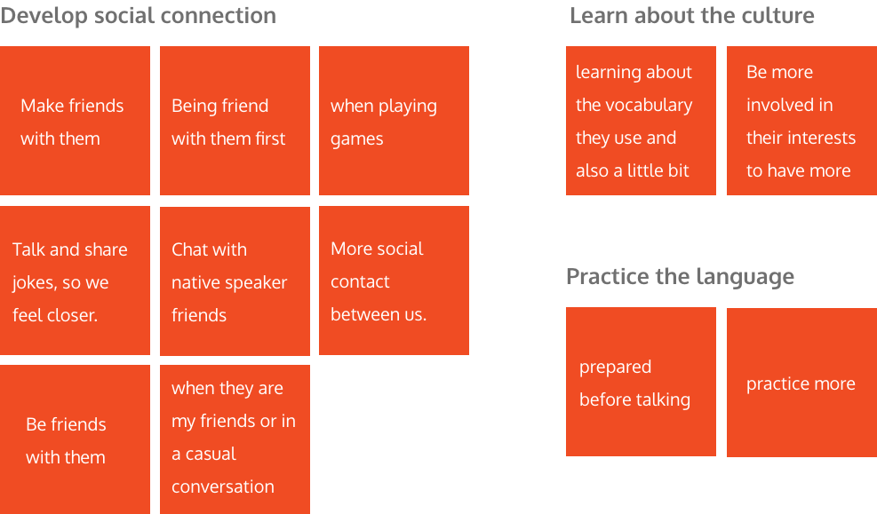
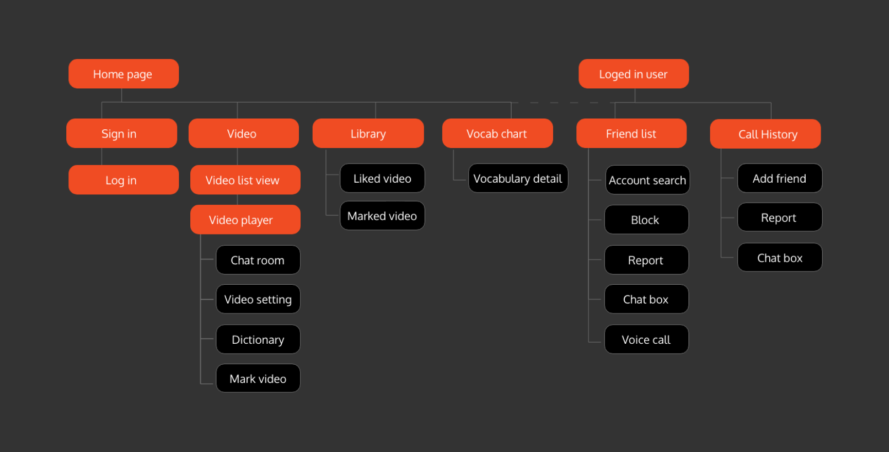
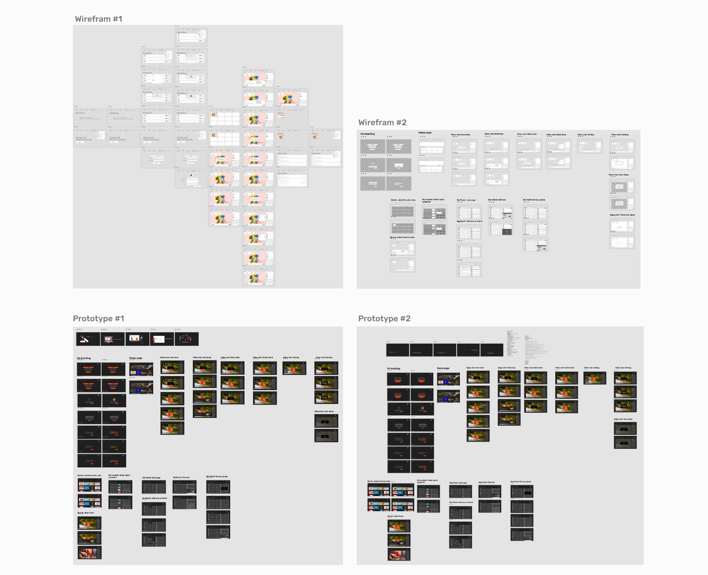
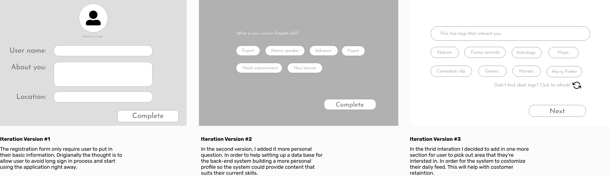
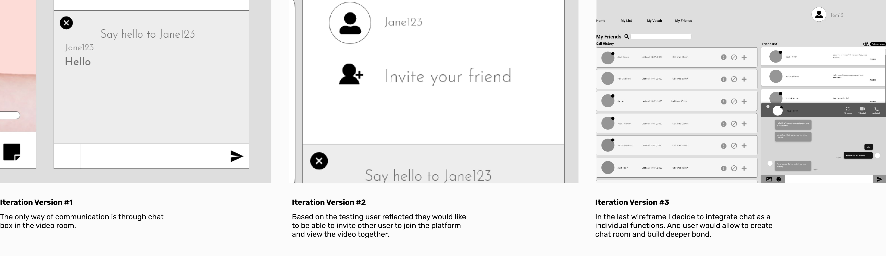
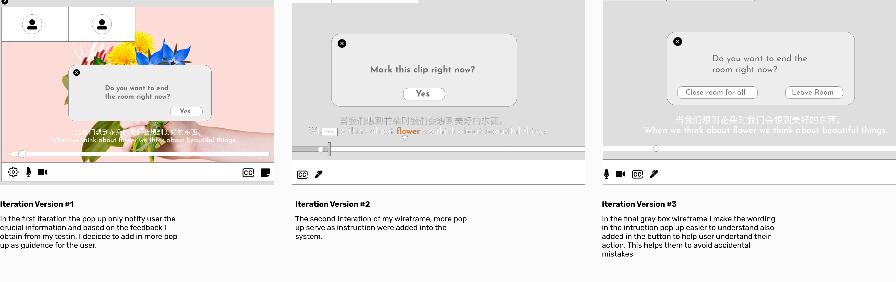

PAROLI
Case study on collaborative language learning platform
Role & Responsibilites
Phase goals
Time:3 Months
Design tools
Language learning needs more support
Learning in a foreign environment could be an exciting and challenging situation for international students . The problem is more prominent when they are put in an environment that doesn't use their native language. They felt outcasted the learning environment and increased social stress. Moreover, they might find the learning process stress-inducing. This project is dedicated to identifying a better solution for them to allow them to be more social and engage with native speakers. Thus, creating a healthy collaborative language learning community.
Research
Leading assumption
Competitive analysis
I went on the Duolingo website and took screenshots of most of the learning experience. Then write down the note to complete the analysis. To study the user experience closer I also looked at the app review on App Store to understand the existing user pain point. Doulingo had been a trending “meme” on the internet, it is an interesting research material because it reflect the user experience and attitude toward the app.
Duolingo:Competitive testing
To find out how effective Duolingo’s learning method I found a recent Duolingo user and conducted daily observations of his behaviour on the app, combined with an interview after he finished his daily learning goal. I’m able to compose this chart of the fluctuation in user experience.
Pain Points
Pain Point#1
Health system in the app had make people feel frustrated and stressed out in the learning process users feel afraid to make mistake
Better Approch
Pain Point#2
Course has too much restrictionNot flexible enough. The learning experience is dull. The fun factor is low and drove user away.
Better Approch
Pain Point#3
Reminder from the app make user feel stressed. The tone in the app is not friendly enough to make users to maintain a learning habit.
Better Approch
Survey
75%
Of the participant feel cultural barrier is stopping them from communication.
68%
Of the user will turn to a native spaker when meeting a problem.
84%
Of the participant enjoy learning from watching films and playing games.
85%
Participants likes communicate in a private chat.
Survey Affinity Diagram
The affinity diagram is created based on the written responses on “What give you more confident to speak to a native speaker?” from the participant.
Interviews
3 participant were chosen to join the interview for this project. The object is to understand the user's need and their expectation.
"I hate taking notes when I'm watching films, it affect the watching process and I lose my train of thought while I'm taking notes."
India - Harry P
"Cultrual-slang will help me blend in with native speaker, but without communication I won't know if I'm using it correctly or not."
HongKong - Steffi Y
"I want to have connection with native speakers but a lot of time I don't know how to start a conversation. I'm always worried to end up in an awkard situation or make a awful joke that makes me look bad."
China - Bill C
Key insight
User needs
Personas & User Journey
Site map
I designed a site map to help with information architecture, with a diagram I was able to undersand how to organize the user flow and make sure the the functionality will serve it's purpose following the corrrect logic without breaking user's mental models.
Wireframe testing
In the first round of testing, I chart up the result into a chart to help me visualize the frustration and where the obsticles occurs in my wirefrem. This round of testing is the milestone in my development because it helped me re-ajust my project to approch user pain points and elevate my high fidelity prototype.
Design interation
Before making the final design, I had made 4 different iterations of design and testing rounds. Here are some of the major impmovement I have made based on the test result:
Personalized registration is king
he registation process could add more detailed qestion to help identfiy user interst. This project is made to be intuitive and be completed with simple clikcs. Iteration two have added more option for user to freedom to add custom answers to complete the process.
More option to reach out
More freedom to the user, a lot of feedback from my participent indicated adding functionality to allow them to build their own categories would be helpful, in the second iteration I came up with video categories and chat that will increase user's power of interaction.
Indication and guidence
My participant had reflected a lot of the unique functionality in the Web app is hard to understand, This problem mostly occured in the video room and the save video part of the app, I came up with more pop up information and highlight guidence to help user feel more confident while interacting.
Final test result
100%
Task Completion
84%
Satisfaction with functionality
10%
Error rate
98%
Would become future users
Communicate my solution
Personalized Communication
The sign-in will allow the user to customize their account setting, and personalizing the content they prefer to learn about on the platform.
Consistent Video list view
Browse video with ease, support user to find the most trending video topics. Like and save the video to library for later view.
Watch video with partner
Enjoy video with a partner in a private chatroom, share, bond and learn together. Multi-language subtitle with dictionary for additional support.
Easy vocabulary review
Review saved vocabulary and learn with more in-depth information. Get motivated by study report and build your confidence from here.
Connect and bonding
Find user information from call history and friend lists, add friends and build a deeper social connections.
Take away
How do we understand people better?
Secondary research is more helpful then I expected. By reading professional studies on people's learning
behaviour leading up to
in depth design terms. I was able to come up with solution that follows the user psychology and help
them feel more at ease during
each of my testing.
User research is not only about collecting massive data. For the user research of this project, I had
pay more thought into crafting
my question and making sure I'm asking the right questions. During the interview sessions noting down
specific senario is key to create
a grounded user case, and with a good user case I was able to come up with specific solution that is
effective to their pain points.
Improvment
How would I take it to the next level?
This is the first big project that I completed on my own, the biggest problem is having too much freedom,
it is easy to have the project
go out of scope. I find it really frustrating when I realize I can come up with a better solution but
time does not allow me to continue with
more testing. I had learn to control my project scope and focues on a specific user flow instead of
trying to jam all the possible solution in
one project.
Having more opportunity to commiunitcate with more professional and get more critiques, with a third person point
of view I would be able to spot more
issues or possibilities in this project. More over I could take this project to the next level.